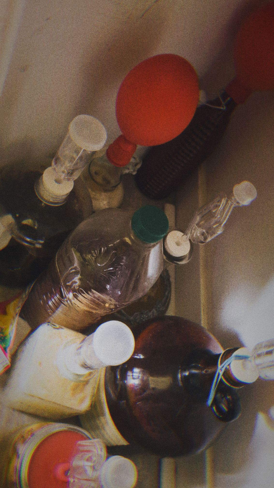

Ginger Ale Mead Recipe
Recommendations
- VEVOR 1.1Gal Water Distiller Running Wine Through This Awesome Vevor Air Still
- Triple Scale Hydrometer
- Mason Jars
- Wine Yeast
I've personally used and recommend these products based on my experience.
Distillers help increase the purity of alcohol, but it's important to follow proper safety instructions as distilling can involve risks.
Although not ideal, a water air distiller is a cost-effective and simple solution that works for basic needs. I'm currently using one until I can invest in a specialized airstill.
NOTE: I recommand getting this stainless VEVOR Distiller, for it's temerature feature which is important to distilling.
A hydrometer is useful for measuring alcohol content.
My Secret Recipe!
Spring water: 17L (from an 18.9L water jug)
Honey: 4.5 kg
White sugar: 1.5 kg (for higher proof but results in a sweeter taste, adjust to taste) *optional
Bread yeast: 3 packets (helps quick start the fermentation process)
Wine yeast (Lalvin EC-1118): 3 packets (helps continue the fermentation process longer)
Ginger roots: 150 grams
Pine spikes: 200 grams
Alternatively, instead of the white sugar, you could add some maple syrup, if you can afford it.
Honestly, I am one of those rascals who don't mind the taste of bread yeast and in a pinch will use 3 additional packets of it instead of wine yeast, but keep in mind that only using bread yeast might not allow you to reach the highest ABV possible.
The Core Flavors!
If you really like strong root flavors, feel free to crank that up to 200 grams, heck, even 250 if you're feeling daring. It shouldn't kill ya. However, if you are looking for a more subtle taste, you can use only 100 grams. No one is gonna judge ya.
Now this ain't negotiable; these little spikes are really the core of this simple recipe. You can't really put less than that, and putting more will result in a drink that tastes like Christmas.
Additionally, some dried raisins (about 50 grams) never hurt a good drink and can help give nutrients to the yeast, but you can also add ferment-o or other bought nutrients. This is all optional.
Additional advice: put the ginger roots, pine spikes, and any fruits inside some sort of food-grade cloth bag. That way you can more easily remove them to start another batch in the same jug.
Remember to disinfect every tool you use and wash the pine spikes and the ginger well before starting anything.
Leave to ferment for about a month or until no bubbles come out of the airlock. After that, wait an additional 1 to 2 weeks for sediment to settle at the bottom and to make sure the fermentation is complete.
Once all that is done, use a tube to transfer the liquid into another container without taking any of the yeast sediment at the bottom. I like to leave about an inch of liquid on top of the yeast to make sure not to mix any yeast into the final output.
At this point, you could distill the mead you just made to get a higher proof alcohol, but a lot of the flavor will be lost. If you plan on distilling, you can double the quantity of ginger roots and pine spikes in hopes that more flavor will carry over the distillation process.
Feeling fancy? Take that liquid you just made into individual jars and add some roasted oak to it. Leave it to age for another 2 to 8 weeks in a sealed container (to emulate barrel aging). Leaving it there for longer won't hurt if you are patient enough, but I sure ain't.
Last step, the most important one: share your delightful creation with all your friends and family and be proud that you can all get smashed on a mead you made at home.
Experimental Canada-Dry mead!
Ingredients
- Canada Dry (instead of water): 3 liters
- Bread yeast: 1 packet (7 grams)
- Guru energy drink or Red Bull: 1 can (250 ml)
- White sugar: 1 kg (to add after fermentation)
- Lemon: 1 whole, sliced
- Dry raisins: 100 grams, sliced
- Honey: 1 kg
- Blue food dye: 2 drops (post-fermentation)
- Vanilla extract: 1 drop (post-fermentation)
- Corn syrup: 250 ml
- Pine needles: A small handful, washed and sanitized
Directions
- Primary Fermentation:
- Mix 3 liters of Canada Dry with 1 kg of honey in a large sanitized fermentation container.
- Add the juice and slices of 1 lemon.
- Add 100 grams of sliced dry raisins.
- Add 1 can (250 ml) of Guru energy drink or Red Bull.
- Add a small handful of washed and sanitized pine needles.
- Stir well to combine all ingredients.
- Add 1 packet (7 grams) of bread yeast, ensuring it's well mixed.
- Cover the container with an airlock and let it ferment in a dark place at room temperature for about 2-4 weeks, until fermentation slows down significantly.
- Secondary Fermentation:
- After primary fermentation, rack (transfer) the mead into a clean container, leaving the sediment and pine needles behind.
- Add 250 ml of corn syrup to the mead.
- Add 1 kg of white sugar to increase sweetness (adjust to taste if necessary).
- Stir gently to dissolve the added sugar and corn syrup.
- Let the mead sit for another week or two for secondary fermentation.
- Post-Fermentation Additions:
- After secondary fermentation is complete, add 2 drops of blue food dye and 1 drop of vanilla extract to the mead.
- Stir gently to ensure even distribution.
- Bottling:
- Once fermentation is completely done and post-fermentation additions are made, bottle the mead.
- Ensure the bottles are sanitized and sealed properly.
- Let the bottled mead age for at least a month to mellow the flavors.
Notes
- Sweetness: Since you want it very sweet, like Palm Bay or poppers, the additional sugar after fermentation will help achieve that. Adjust the amount if you find it too sweet or not sweet enough.
- Carbonation: If you prefer a carbonated mead, you can prime it with a bit more sugar before bottling. However, be cautious to avoid over-carbonation, which can cause bottles to explode.
- Aging: The longer you let it age after bottling, the better the flavors will blend. A few months to a year can make a significant difference.
- Pine Needles: Ensure the pine needles are from a safe, edible species like Eastern White Pine. Avoid any pine that may be toxic.
TIP: If you're going to use a lot of fruits, place them inside a cloth bag (you can even add clean rocks as weights). This way, they are easier to remove when cleaning your jar, and they won't be in contact with air.
Experiment with the quantities if necessary, as personal taste preferences can vary. Enjoy your mead-making!